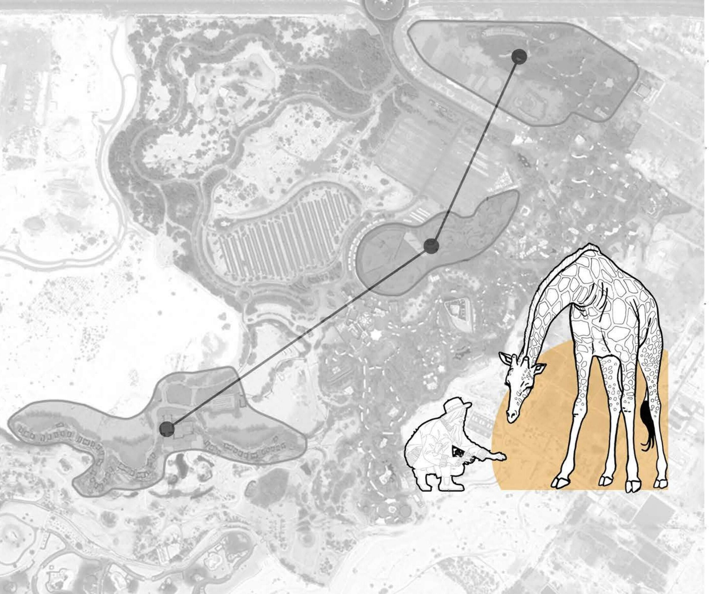
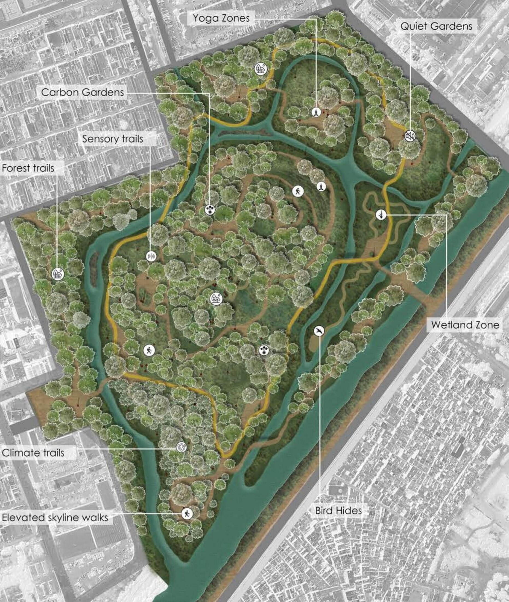
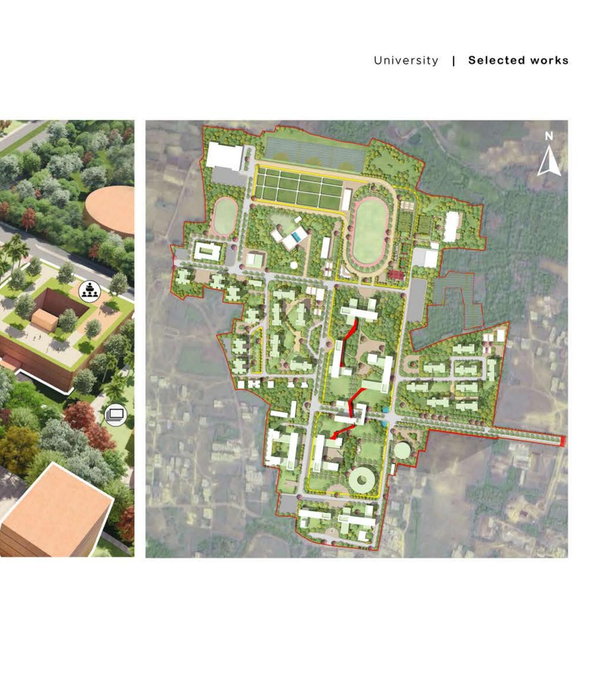
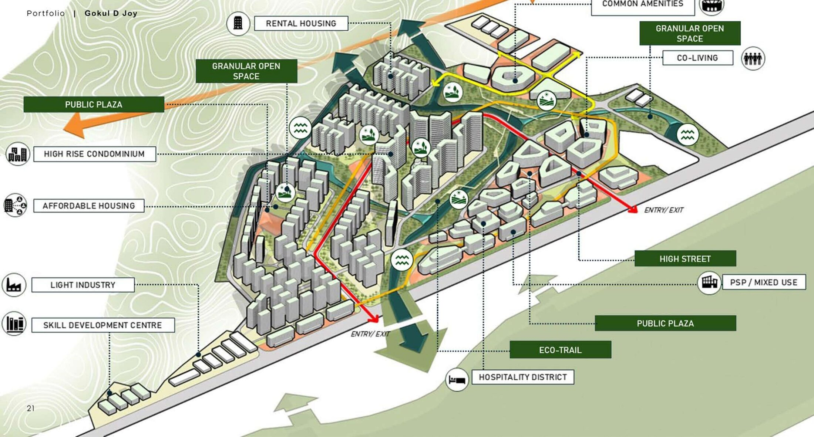
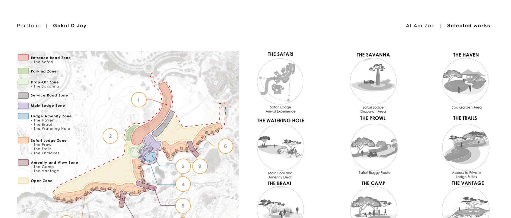
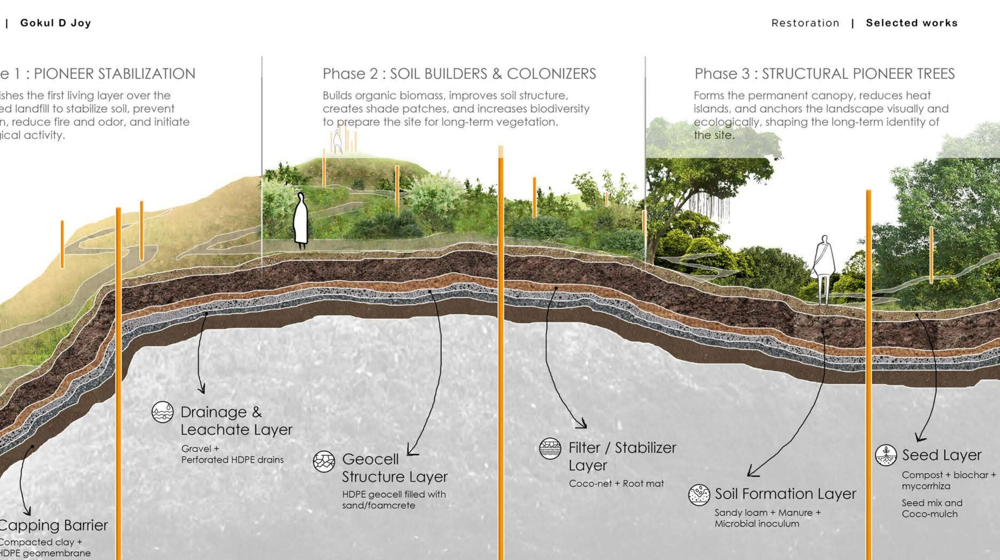
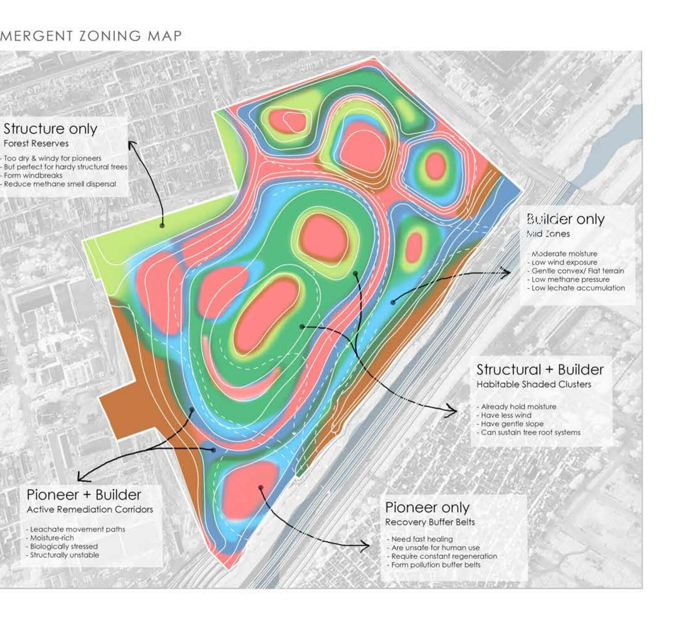
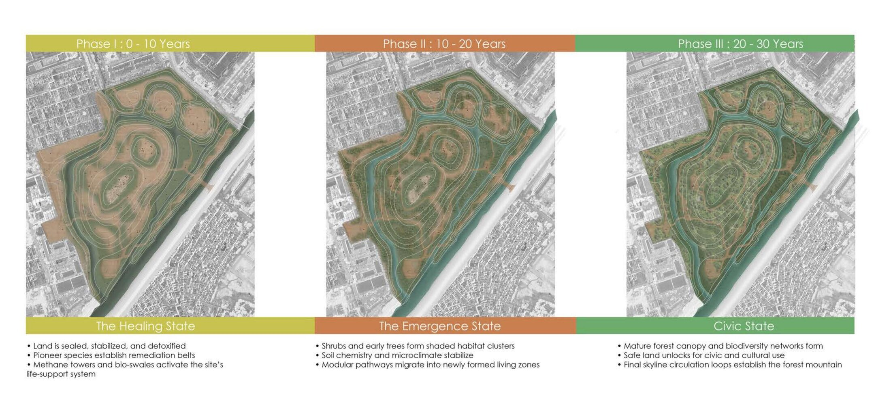
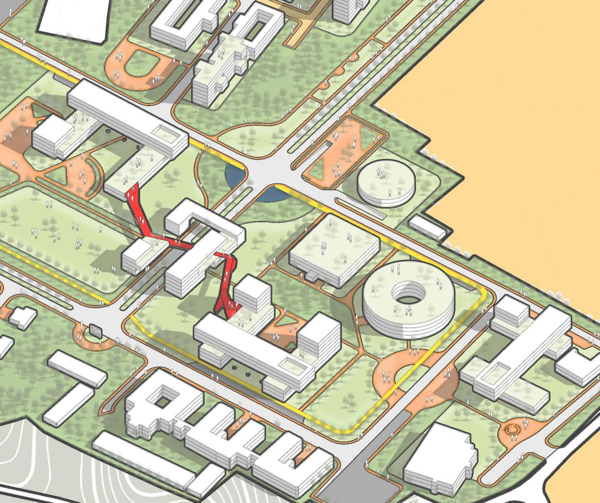
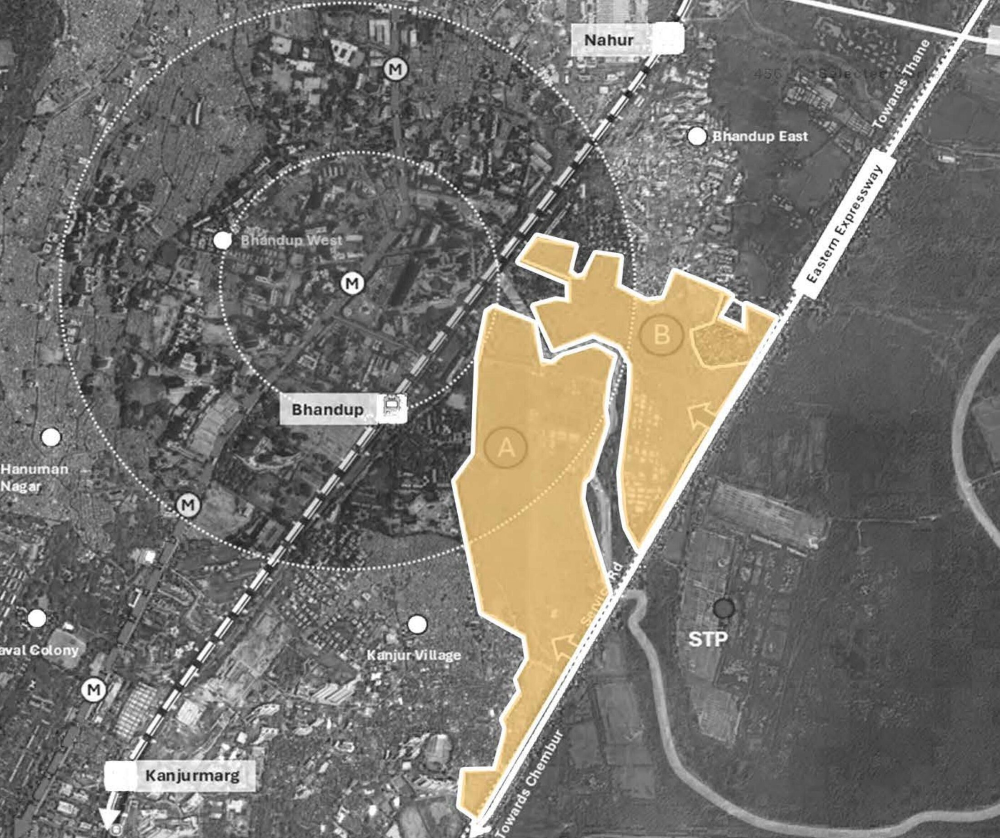

Landscape Architecture | Master Planning | Computational Design
Gokul Joy
Landscape Architect at WAHO, Dubai
Formerly AECOM
“A dumpyard is not waste, it is unclaimed land.”
— from Ghazipur Restoration, a 30‑year regenerative masterplanEvery project starts with reading a landscape and asking what it could become. Five years spent translating site analysis into spatial strategy: from desert hotels to ecological restoration. I enjoy moving fluidly between fast sketches, digital modelling, and presentation, using each to develop ideas that are both thoughtful and easy to communicate.
Selected Work
Four landscapes,
four questions.
How can landscape zones tell a story within a zoo in the Arab context?

A safari lodge and animal holding facility in the Al Ain desert, where circulation itself narrates the visitor's journey through nine distinct landscape zones.
View full case study ↗What if a landfill could design itself?

A thirty-year regenerative masterplan where self-propagating plant systems repair toxic land and gradually unlock it for civic use.
View full case study ↗How can we introduce modernity into typical university grid planning?

An existing campus redesigned to read as a university in both infrastructure and landscape, staged across two circulation spines.
View full case study ↗Can high-density redevelopment accommodate both aspiration and equity within the same urban fabric?

A redevelopment proposal integrating rehousing with mixed-use growth along Mumbai's Eastern Express Highway.
View full case study ↗01 / 04
Al‑Ain Zoo
Zoo & Animal Holding Facility — Abu Dhabi, UAE
“How can landscape zones tell a story within a zoo in the Arab context?”
Set in the Al Ain desert with an elegant view on either side, the brief called for a safari lodge and animal holding facility where circulation itself narrates the visitor's journey. I led the concept design and used Rhino and Grasshopper to test zoning and form iteratively, coordinating with consultants to keep the design intent intact through every stage.

Zoning Legend & Circulation StudyElsewhere on site, a former animal enclosure is left to be reclaimed — visitors track the ruins where humans and animals now share territory, migrating and colonising in turn.
02 / 04
Ghazipur Restoration
Landfill Regeneration — Delhi, India
“What if a landfill could design itself?”
A thirty-year regenerative masterplan for the Ghazipur landfill, where self-propagating plant systems repair toxic land and gradually unlock it for civic use. Zoning, circulation and public access weren't drawn by hand — they emerged from biological fields: topography, hydrology, methane pressure and soil condition, read as data before they were read as a plan.

Section — Capping to CanopyPioneer Stabilization
Establishes the first living layer over the capped landfill — stabilizing soil, preventing erosion, reducing fire and odor, and starting biological activity.
Soil Builders & Colonizers
Builds organic biomass and soil structure, creates shade patches, and increases biodiversity to prepare the site for long-term vegetation.
Structural Pioneer Trees
Forms the permanent canopy, reduces heat islands, and anchors the landscape's long-term ecological and visual identity.

Emergent Zoning — Detected, Not DrawnZones like Pioneer + Builder active remediation corridors and Structural + Builder habitable shaded clusters were not sketched — they were detected from pioneer-spread, builder-cluster and structural-forest propagation fields across the site.

0–30 Years — The Healing, Emergence & Civic States“The forest decides what the city may become. We did not design a park — we designed how poisoned land learns to live again. Life arrives first. The city follows.”

The Eco Grid — Campus Masterplan03 / 04
University Masterplan
Campus Infrastructure — India
“How can we introduce modernity into typical university grid planning?”
The brief: redesign an existing campus so it reads as a university in both infrastructure and landscape. Development ran in two staged phases — solar field, athletics track and wellness facilities first, then the academic core — stitched together by two threaded circulation spines.
The Promenade carries exhibit panels, vending corners and shaded hammocks; the Knowledge District wraps open-air classrooms and project display courts around a red sculptural threshold that marks the campus's new civic heart.
04 / 04
Urban Transition
High-Density Redevelopment — Bhandup, Mumbai
“Can high-density redevelopment accommodate both aspiration and equity within the same urban fabric?”
A redevelopment proposal integrating rehousing with mixed-use growth — affordable housing, economic infrastructure and high-density towers positioned as a catalyst for inclusion, livelihood continuity and resilient urban integration along Mumbai's Eastern Express Highway.

Site — Transit-Oriented ParcelIntegrate
City–forest weave: an integration of green and city skyline.
Flow-crafted
Waterways segmented to reimagine the design-scape.
Eco-corridors
Water and vegetation meet along a continuous public green.
Synergize
A network of open space and pedestrian zones for community life.
“To create a thriving, sustainable and climate-resilient development — enhancing residents' quality of life, expanding opportunity, preserving character, and setting a global standard for inclusive urban regeneration.”
Also on the Boards
RCOC — Diriyah South
Collaborated on public realm and landscape strategy for a culturally sensitive, pedestrian-first district — coordinating softscape, hardscape and utility integration with urban planners and infrastructure teams.
Aerotropolis
Facilitated master planning and infrastructure coordination for an airport-driven aerotropolis, aligning development parcels to airside and landside interface requirements with aviation and transport planners.
Practice
Where ecology meets
the parametric.
Where strategy shapes the landscape.
Landscape Design & Master Planning
From single gardens to multi-parcel visions — spatial strategy that survives contact with a client, a contractor and a site.
Urban Design & Spatial Strategy
From neighbourhood frameworks to public spaces, creating urban environments that respond to context, movement, and people.
GIS Mapping & Spatial Analysis
Topography, hydrology and biological field data, translated into zoning that emerges rather than gets imposed.
Parametric & Computational Design
Grasshopper-driven form-finding for zoning, massing and iterative testing across large, constrained sites.
Sustainable & Native Planting Design
Self-propagating, phased plant systems chosen to do long-term ecological work, not just look good on opening day.
Ecological Restoration & Landscape Regeneration
Transforming degraded landscapes into resilient ecosystems through ecological processes, phased interventions, and long-term thinking.
Journey
Four studios,
one throughline.
Landscape Architect · WAHO
Dubai, UAE
Leading concept design and landscape development, translating site analysis into spatial strategy through iterative design, form development, and multidisciplinary coordination to maintain design intent throughout every stage.
Landscape Architect · AECOM
Gurgaon, India
Integrated with cross-disciplinary teams to develop masterplans aligned with client goals and ecological considerations. Designed and delivered five-plus high-profile projects spanning urban parks, residential developments and commercial landscapes.
Junior Landscape Architect · DSA International
Hyderabad, India
Supported design, management and scheduling across large-scale landscape projects. Created zoning plans and conceptual sketches for seven-plus projects, including four large-scale developments in the UAE and Saudi Arabia.
Junior Architect · Seekers Design Co.
India
Assisted senior architects with site plans and conceptual renderings; organised client meetings and presentation materials.
Bachelor of Architecture · Marian College of Architecture and Planning
Trivandrum, Kerala, India
Thesis — Sensory Architecture and SPD: Curvilinear Architecture and Sensory Impact.
Dissertation — Cellular Automata (Coding-Based Design in Architecture) for the Mass Housing Crisis.
Contact